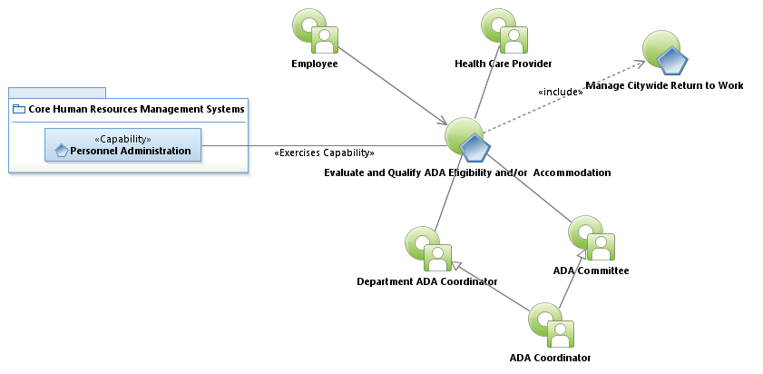
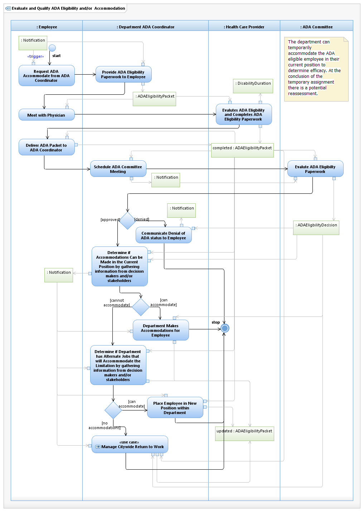

Use Case Model: Evaluate and Qualify ADA Eiligibilty and/or Accommodation
Architect: Aaron Brown, IT Enterprise Architect Senior
Date Last Modified: 3/8/2013
User Review: Rick Thomas, Shelly Sheppard, Linda Escamilla
Date: 3/8/2013
Evaluate employees Americans with Disabilities Act (ADA) accommodation request. The ADA committee makes a decision about eligibility. The Department is the final arbiter for decision to accommodate.
Follow link to Role Definitions

Use Case Model: Evaluate and Qualify ADA Eiligibilty and/or Accommodation
Follow link to Manage Return to Work

Activity Model: Evaluate and Qualify ADA Eiligibilty and/or Accommodation